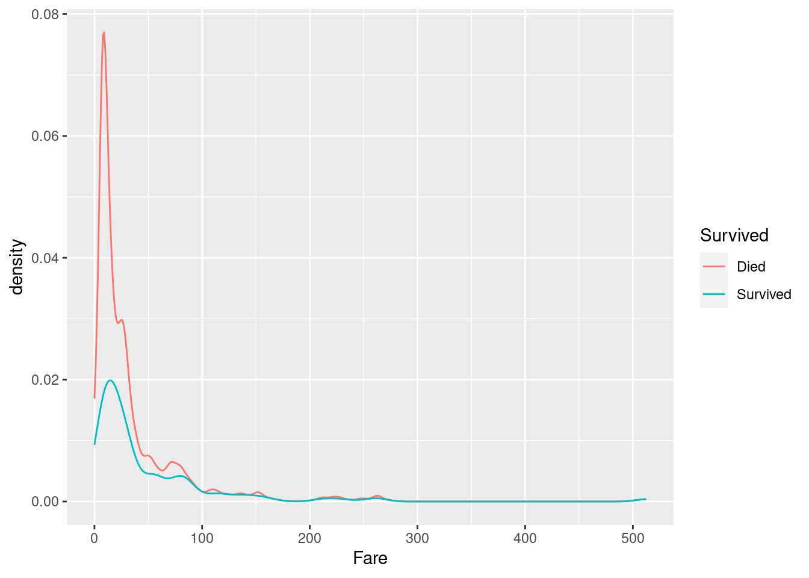

Chapter 3 Titanic - studies on classification
In this chapter we will turn our focus to classification techniques. The data set used will be the Kaggle data set Titanic.
The first section will focus on data collection and data wrangling. The second section has its focus on EDA. In the third and last section we will study the following classification models and how to optimize them for the dataset: Logistic Regression, LDA, kNN, SVM, XGBoost and lightGBM.
The evaluation metric will be the Kaggle score for each model.
3.1 Data collection and cleaning
The data was downloaded from (Kaggle)[https://www.kaggle.com/c/titanic]. The data set is made up of two parts. Part 1 is a training set for supervised learning. Part 2 is a test set, where the outcome column has been removed.
We will begin by loading the two data files and have a look at the data types of each column:
titanic_train <- read_csv("./titanic_train.csv")## Rows: 891 Columns: 12
## ── Column specification ──────────────────────────────────────────────────────────────────────────────────────────────────────────────────────────────────────────────────────────────────────
## Delimiter: ","
## chr (5): Name, Sex, Ticket, Cabin, Embarked
## dbl (7): PassengerId, Survived, Pclass, Age, SibSp, Parch, Fare
##
## ℹ Use `spec()` to retrieve the full column specification for this data.
## ℹ Specify the column types or set `show_col_types = FALSE` to quiet this message.titanic_test <- read_csv("./titanic_test.csv")## Rows: 418 Columns: 11
## ── Column specification ──────────────────────────────────────────────────────────────────────────────────────────────────────────────────────────────────────────────────────────────────────
## Delimiter: ","
## chr (5): Name, Sex, Ticket, Cabin, Embarked
## dbl (6): PassengerId, Pclass, Age, SibSp, Parch, Fare
##
## ℹ Use `spec()` to retrieve the full column specification for this data.
## ℹ Specify the column types or set `show_col_types = FALSE` to quiet this message.We see that the training data is comprised of 891 observation of 12 features, whereas the test data is comprised of 418 observations of 11 features.
We have 5 features coded as charaters: Name, Sex, Ticket, Cabin, Embarked.
We have 6 numeric features: PassengerId, Pclass, Age, SibSp. Parch, Fare.
Let us first see if we need to deal with missing values:
titanic_train %>%
select(which(colSums(is.na(.))>0)) %>%
summarise_all(~ sum(is.na(.)))## # A tibble: 1 × 3
## Age Cabin Embarked
## <int> <int> <int>
## 1 177 687 2We see that most of the cabin data is missing. We will not deal with these for now, but drop the column, when doing the actual modelling later.
For embarked we will replace the missing values with the mode. We start by determining the mode:
titanic_train %>% group_by(Embarked) %>% count() %>% arrange(desc(n))## # A tibble: 4 × 2
## # Groups: Embarked [4]
## Embarked n
## <chr> <int>
## 1 S 644
## 2 C 168
## 3 Q 77
## 4 <NA> 2Then we replace the NAs by “S”:
titanic_train <- titanic_train %>% mutate(Embarked = replace(Embarked,is.na(Embarked),"S"))Next, let’s have a look at the distribution of age:
titanic_train %>% count(Age_interval = cut_interval(Age,n=6))## # A tibble: 7 × 2
## Age_interval n
## <fct> <int>
## 1 [0.42,13.7] 71
## 2 (13.7,26.9] 248
## 3 (26.9,40.2] 245
## 4 (40.2,53.5] 100
## 5 (53.5,66.7] 43
## 6 (66.7,80] 7
## 7 <NA> 177We get see that Age seems right skewed. To verify this we calculate the skewness using the {moments} package:
titanic_train %>% select(Age) %>% filter(!is.na(.)) %>% summarise(Skewness = moments::skewness(.))## # A tibble: 1 × 1
## Skewness
## <dbl>
## 1 0.388With the right skewed age data we choose to impute the missing values in Age column with the median.
titanic_train <- titanic_train %>% mutate(Age = replace(Age,is.na(Age),median(Age,na.rm=TRUE)))With this we conclude the data collection and preparation process and move on to the EDA.
3.2 EDA
Lets begin by looking at the prior distrubution of survivals:
titanic_train %>%
mutate(Survived = as_factor(Survived)) %>%
mutate(Survived = fct_recode(Survived, "Died"="0","Survived"="1")) %>%
ggplot(aes(x=Survived,fill=Survived)) +
geom_bar(show.legend = FALSE) +
labs(x="Survival Status", y="Passenger Count", title = "Distribution of passenger status")We see that roughly 3 of 5 died in the Titanic disaster. We now turn our attention to finding reasonable correlations in the data. A place to start would be a correlation diagram. We can choose to look only at the numerical features in the data set:
titanic_train %>%
select(which(sapply(.,is.numeric))) %>%
correlate(diagonal = 1,quiet=TRUE) %>%
rplot()## Don't know how to automatically pick scale for object of type noquote. Defaulting to continuous.Alternatively we can one hot encode the relevant categorical variables and include them as well:
recipe(Survived ~ .,data=titanic_train) %>%
update_role(PassengerId,Name,Ticket,Cabin,new_role="ID") %>%
step_dummy(all_nominal_predictors(),one_hot=TRUE) %>%
prep(retain=TRUE) %>%
juice() %>%
select(which(sapply(.,is.numeric))) %>%
correlate(diagonal = 1) %>%
rplot() + theme(legend.position = "top")##
## Correlation method: 'pearson'
## Missing treated using: 'pairwise.complete.obs'## Don't know how to automatically pick scale for object of type noquote. Defaulting to continuous.From the correlation plot we see that Fare and PClass are moderately correlated. This can become an issue later on in the modelling process. We also see that Survived primarily is correlated to Sex and PClass. Lets investigate these further.
First let us have a look at how survived is related to sex:
titanic_train %>%
mutate(Survived = as_factor(Survived)) %>%
mutate(Survived = fct_recode(Survived, "Died"="0","Survived"="1")) %>%
ggplot(aes(x=Sex, fill=Survived)) +
geom_bar(position="dodge")As expected the two variables are correlated. A higher proportion of women survived compared to men.
Next let us have a look at the Pclass vs Survived:
titanic_train %>%
mutate(Survived = as_factor(Survived)) %>%
mutate(Pclass = as_factor(Pclass)) %>%
mutate(Survived = fct_recode(Survived, "Died"="0","Survived"="1")) %>%
ggplot(aes(x=Pclass, fill=Survived)) +
geom_bar(position="dodge")From this we see that a 1st class passenger was more likely to survive than a 3rd class passenger.
Finally we can have a look at the fare distributions of the passengers:
titanic_train %>%
mutate(Survived = as_factor(Survived)) %>%
mutate(Survived = fct_recode(Survived, "Died"="0","Survived"="1")) %>%
ggplot(aes(x=Fare,color=Survived)) +
stat_density(geom="line") We see that among those that died, there is a higher proportion of passengers with a low fare. This is easily explained from the higher proportion of 3rd class passengers among those who died.
3.3 Modelling
In this section we will develop several models to predict if a passenger will survive or not. Different model classes have different requirements to feature engineering, so we will develop several preprocessing recipes and choose the ones that performs best with respect to accuracy and ROC.
Since some models are able to deal well with NAs we reload the original dataset with missing values for modelling purposes:
titanic_train_model <- read_csv("./titanic_train.csv")## Rows: 891 Columns: 12
## ── Column specification ──────────────────────────────────────────────────────────────────────────────────────────────────────────────────────────────────────────────────────────────────────
## Delimiter: ","
## chr (5): Name, Sex, Ticket, Cabin, Embarked
## dbl (7): PassengerId, Survived, Pclass, Age, SibSp, Parch, Fare
##
## ℹ Use `spec()` to retrieve the full column specification for this data.
## ℹ Specify the column types or set `show_col_types = FALSE` to quiet this message.For the classification models we need the outcome to be a factor variable:
titanic_train_model <- titanic_train_model %>% mutate(Survived = as_factor(Survived))Let us have a look at the skewness of the different numerical variables to decide upon which kind of imputation to choose:
titanic_train_model %>%
select(which(sapply(.,is.numeric)),-PassengerId) %>%
summarise_all(~ moments::skewness(.))## # A tibble: 1 × 5
## Pclass Age SibSp Parch Fare
## <dbl> <dbl> <dbl> <dbl> <dbl>
## 1 -0.629 NA 3.69 2.74 4.78We see that all variables are skewed, so we impute them using the median.
All models use the same formula and need to have the same columns as ID columns, so we begin by making a base recipe for the preprocessing:
titanic_baserec <-
recipe(Survived ~ ., data=titanic_train_model) %>%
step_rm(Ticket,Cabin,Name) %>%
update_role(PassengerId,new_role="ID")To tune the different models we will use 10-fold cross validation. For this purpose we define the folds:
titanic_folds <- vfold_cv(titanic_train_model,strata = Survived)3.3.1 Logistic Regression
Logistic regression relies on the features being independent. Moreover it doesn’t do well with missing values and factors with small frequencies. This gives us the following recipe for logistic regression:
titanic_logit_rec <-
titanic_baserec %>%
step_impute_median(all_numeric_predictors()) %>%
step_impute_mode(all_nominal_predictors()) %>%
step_dummy(all_nominal_predictors()) %>%
step_zv(all_predictors())For decorrelation we can choose between PCA and removing correlated variables. Additionally we can decide to normalize the numeric predictors or not. If we do, we use Yeo-Johnson transformation. This gives us the following final recipes for logistic regression:
titanic_logit_pca_nonorm <-
titanic_logit_rec %>%
step_pca(all_predictors())
titanic_logit_decor_nonorm <-
titanic_logit_rec %>%
step_corr(all_predictors())
titanic_logit_pca_norm <-
titanic_logit_rec %>%
step_pca(all_predictors()) %>%
step_YeoJohnson(all_numeric_predictors())
titanic_logit_decor_norm <-
titanic_logit_rec %>%
step_corr(all_predictors()) %>%
step_YeoJohnson(all_numeric_predictors())For models we can use a regularized or un-regularized logistic regression model. For the regularized model we will using 10-fold cross validation tuning to choose the best regularization parameters.
titanic_logit_mod <- logistic_reg() %>%
set_mode("classification") %>%
set_engine("glm")
titanic_reg_logit_mod <- logistic_reg(penalty=tune(),mixture=tune()) %>%
set_mode("classification") %>%
set_engine("glmnet")Now we can define the workflow set for the different models and recipes:
titanic_logit_wfs <-
workflow_set(
preproc = list(DeCorNoNorm = titanic_logit_decor_nonorm,
DeCorNorm = titanic_logit_decor_norm,
PCANoNorm = titanic_logit_pca_nonorm,
PCANorm = titanic_logit_pca_norm),
models = list(regularized = titanic_reg_logit_mod,
unregularized =titanic_logit_mod)
)For tuning the regularized model we define the following tuning grid:
titanic_logit_grid <- grid_regular(penalty(),mixture(),levels=c(5,2)) We are now ready to fit at tune the various models:
titanic_logit_control <- control_grid(
save_pred = TRUE,
parallel_over = "everything",
save_workflow = TRUE
)
titanic_logit_results <-
titanic_logit_wfs %>%
workflow_map(
seed = 1234,
resamples = titanic_folds,
grid = titanic_logit_grid,
control = titanic_logit_control,
metrics = metric_set(accuracy,roc_auc),
verbose = TRUE
)## i 1 of 8 tuning: DeCorNoNorm_regularized## ✓ 1 of 8 tuning: DeCorNoNorm_regularized (32.2s)## i No tuning parameters. `fit_resamples()` will be attempted## i 2 of 8 resampling: DeCorNoNorm_unregularized## ✓ 2 of 8 resampling: DeCorNoNorm_unregularized (12.1s)## i 3 of 8 tuning: DeCorNorm_regularized## ✓ 3 of 8 tuning: DeCorNorm_regularized (32.6s)## i No tuning parameters. `fit_resamples()` will be attempted## i 4 of 8 resampling: DeCorNorm_unregularized## ✓ 4 of 8 resampling: DeCorNorm_unregularized (12.8s)## i 5 of 8 tuning: PCANoNorm_regularized## ✓ 5 of 8 tuning: PCANoNorm_regularized (31.7s)## i No tuning parameters. `fit_resamples()` will be attempted## i 6 of 8 resampling: PCANoNorm_unregularized## ✓ 6 of 8 resampling: PCANoNorm_unregularized (11.7s)## i 7 of 8 tuning: PCANorm_regularized## ✓ 7 of 8 tuning: PCANorm_regularized (31.5s)## i No tuning parameters. `fit_resamples()` will be attempted## i 8 of 8 resampling: PCANorm_unregularized## ✓ 8 of 8 resampling: PCANorm_unregularized (12.1s)Let us have a plot of the fitted models and workflows:
autoplot(titanic_logit_results,rank_metric="accuracy",select_best = TRUE)We see that half of the combinations perform significantly better than the others. Lets have a look at the results:
titanic_logit_results %>%
rank_results(select_best = TRUE) %>%
filter(.metric == "accuracy")## # A tibble: 8 × 9
## wflow_id .config .metric mean std_err n preprocessor model rank
## <chr> <chr> <chr> <dbl> <dbl> <int> <chr> <chr> <int>
## 1 DeCorNoNorm_regularized Preprocessor1_Model01 accuracy 0.796 0.0204 10 recipe logistic_reg 1
## 2 DeCorNorm_regularized Preprocessor1_Model06 accuracy 0.794 0.0217 10 recipe logistic_reg 2
## 3 DeCorNorm_unregularized Preprocessor1_Model1 accuracy 0.794 0.0215 10 recipe logistic_reg 3
## 4 DeCorNoNorm_unregularized Preprocessor1_Model1 accuracy 0.794 0.0213 10 recipe logistic_reg 4
## 5 PCANoNorm_unregularized Preprocessor1_Model1 accuracy 0.730 0.0245 10 recipe logistic_reg 5
## 6 PCANoNorm_regularized Preprocessor1_Model06 accuracy 0.727 0.0235 10 recipe logistic_reg 6
## 7 PCANorm_regularized Preprocessor1_Model09 accuracy 0.723 0.0263 10 recipe logistic_reg 7
## 8 PCANorm_unregularized Preprocessor1_Model1 accuracy 0.713 0.0217 10 recipe logistic_reg 8We see that using PCA to decorrelate features is performing worse than simple removal of correlated variables.
Let us find the best tuning parameters:
titanic_logit_best_parm <-
titanic_logit_results %>%
extract_workflow_set_result("DeCorNoNorm_regularized") %>%
select_best(metric="accuracy")
titanic_logit_best_parm## # A tibble: 1 × 3
## penalty mixture .config
## <dbl> <dbl> <chr>
## 1 0.0000000001 0 Preprocessor1_Model01So the best option is Lasso regression with a slight penalty of 1.0e-10.
titanic_logit_best_wf <- titanic_logit_results %>%
extract_workflow("DeCorNoNorm_regularized") %>%
finalize_workflow(titanic_logit_best_parm)
titanic_logit_best_mod <- fit(titanic_logit_best_wf,titanic_train_model)
titanic_logit_pred <- predict(titanic_logit_best_mod,new_data=titanic_test)We are now ready to write the predictions to a file and upload to Kaggle:
cbind(PassengerId = titanic_test$PassengerId,titanic_logit_pred) %>%
rename(Survived = .pred_class) %>%
write_csv("./titanic_logit_pred.csv")The Kaggle score (which established the baseline for this chapter), is 0.76315. The accuracy is as expected slightly lower than for the training data, but a very respectable result for a linear model.
Lets us collect the results in a Tibble, which we can use at the end of the chapter:
results_table <- tibble(Model = c("L2-penalized Logistic Regression"), Score = "0.76315")
results_table %>% kbl() %>% kable_material(c("striped","hover"))| Model | Score |
|---|---|
| L2-penalized Logistic Regression | 0.76315 |
3.3.2 LDA
The linear discriminant classifier (LDA-C) is mostly included for reference. In general it is not expected to perform as well as the penalized logistic regression.
Pre-processing for the LDA is almost the same as for logistic regression. We need to remove zero variance variables as well as ID variables. Moreover we need to one-hot encode factors and and de-corrolate features. Finally LDA might benefit from normalization of variables, in which case we use Yeo Johnson transformation.
This leaves us with the following preprocessing recipes:
titanic_lda_rec_nonorm <-
titanic_baserec %>%
step_impute_median(all_numeric_predictors()) %>%
step_impute_mode(all_nominal_predictors()) %>%
step_dummy(all_nominal_predictors()) %>%
step_zv(all_predictors())
titanic_lda_rec_norm <-
titanic_baserec %>%
step_impute_median(all_numeric_predictors()) %>%
step_impute_mode(all_nominal_predictors()) %>%
step_dummy(all_nominal_predictors()) %>%
step_zv(all_predictors()) %>%
step_YeoJohnson(all_numeric_predictors())